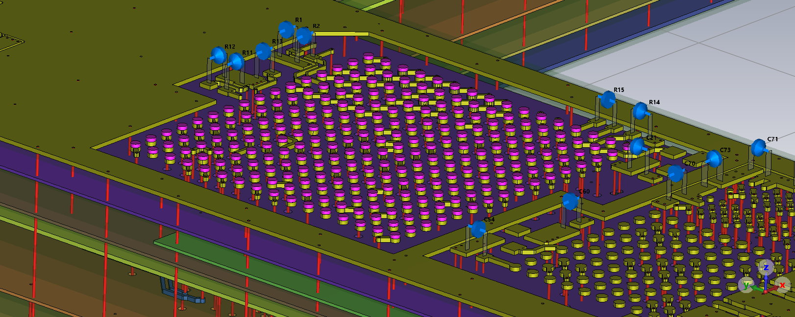

User Layer extrusion¶
To show how to create user layers and work with them, we will be creating solder balls for one component on our PCB.
User layers can store shape and trace geometries.
They are not part of any stackup, but can be extruded with Layer.extrude().
First, we copy the preparations from last chapter:
import cst.interface
from cst.eda import pcb_api
from cst.eda import geometry2d
from typing import List
de = cst.interface.DesignEnvironment.connect_to_any_or_new()
def init_example_pcb():
from pathlib import Path
data_dir = Path(cst.interface.install_paths.root()) / "Online Help" / "PythonTutorial" / "data"
# path to the ECAD file
pcb_file = data_dir / "cst_phone.tgz"
# Create an instance of a PCB
pcb = pcb_api.PCB.convert_from(pcb_file)
return pcb
The code below shows the process of creating the solder balls for the component “U1” on our example PCB.
# Initialize the example pcb
pcb = init_example_pcb()
# Define preliminaries
component = pcb.component("U1")
material = pcb.material("Copper")
net = pcb.net("NONE")
layer = pcb.layer("SIGNAL_1")
# Create user layer
user_layer = pcb.create_user_layer("solderballs", material)
After initializing the PCB, we get the component “U1”. We also define a material, a net and a layer that will be used to create the solder balls later on.
We create a new user layer, by using pcb.create_user_layer().
We call it “solderballs” and assign the created material to it.
Using the created function get_padstack_shapes_of_component, we retrieve the padstacks’ shapes of “U1”.
The function is shown below.
def get_padstack_shapes_of_component(comp: pcb_api.Component) -> List[geometry2d.Shape]:
"""Returns the shapes of all padstacks of the passed component"""
shapes = []
padstacks = comp.padstacks
for padstack in padstacks:
ps_layer = padstack.get_pad_layers(pcb_api.PadType.REGULAR)
if ps_layer:
for shape in padstack.get_pad_geometry(ps_layer[0])[1]:
shapes.append(shape)
return shapes
# Get padstack shapes from the component in layer
shapes = get_padstack_shapes_of_component(component)
# Create shapes on the user layer
for shape in shapes:
user_layer.create_shape(shape, net)
# Extrude the layer
user_layer.extrude(layer1=layer, relative1=1, relative2=1, offset2=1.2)
# Import PCB to MWS
prj_3d = de.new_mws()
pcb.import_to(prj_3d)
We iterate through the returned shapes and add these to our new user layer with user_layer.create_shape.
When all shapes are added, we can extrude the user layer. Here we give the function four parameters to define the height of the extrusion. The documentation of the extrude function shows some examples on how to use these parameters.
Finally, we import the pcb to a MWS project. The image below shows the resulting solder balls in magenta.
